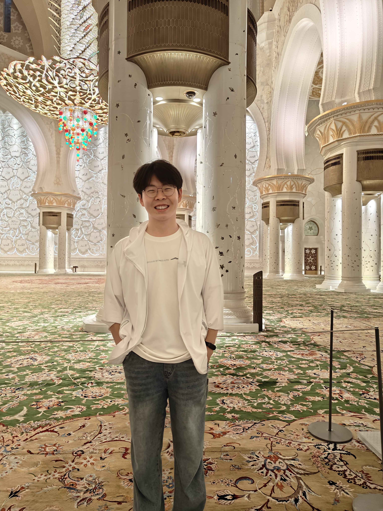

Zengzhi Wang 王增志
PhD student at GAIR Lab, Shanghai Jiao Tong University.
Advised by Prof. Pengfei Liu.
I work on the engineering and science of data for foundation language models. Specifically:
- Data Science: building scaling ladders, evaluating how data recipes scale, and designing scalable data recipes.
- Data Engineering: parsing, refining, auditing, organizing, and synthesizing data.
Currently, I am a research intern on an industry pre-training team.
Always happy to connect—feel free to reach out.

Selected work
Explore research-
OctoThinker
An early systematic study of why mid-training matters for scalable reinforcement learning.
Connects data quality and format to RL performance, with a two-stage recipe that prepares base models for stronger downstream RL.
-
MegaMath
The largest open math pre-training corpus at release.
Used in NVIDIA Nemotron 3 Nano, AMD Instella-MoE, Apertus, and SmolLM3.
-
ProX
Making expert-style data refinement scalable with small language models.
Generates and executes edits tailored to each training example to improve pre-training efficiency.
Training as connection
How training organizes knowledge.
A conceptual view of training: points represent knowledge, and connections suggest how a model uses it.
Build broad knowledge Connect diverse knowledge units into a general representation.